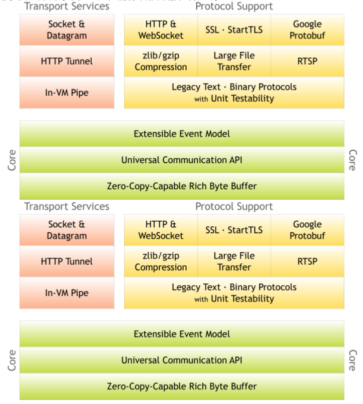
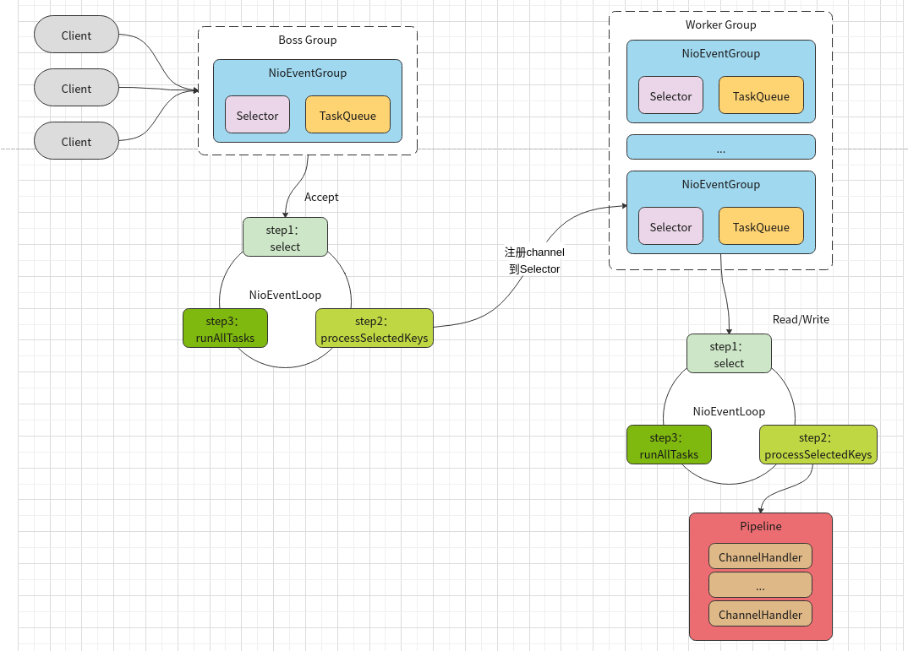

Netty是 一个异步事件驱动的网络应用程序框架，
用于快速开发可维护的高性能协议服务器和客户端。
1、官网简介

Netty是一个NIO客户端服务器框架，可快速轻松地开发网络应用程序，例如协议服务器和客户端。它极大地简化和简化了网络编程，例如TCP和UDP套接字服务器。Netty 对 JDK 自带的 NIO 的 API 进行了良好的封装，解决了NIO 的类库和 API 繁杂， 使用麻烦： 需要熟练掌握Selector、 ServerSocketChannel、 SocketChannel、 ByteBuffer等。 。且Netty拥有高性能、 吞吐量更高，延迟更低，减少资源消耗，最小化不必要的内存复制等优点。
“快速简便”并不意味着最终的应用程序将遭受可维护性或性能问题的困扰。Netty经过精心设计，结合了许多协议（例如FTP，SMTP，HTTP以及各种基于二进制和文本的旧式协议）的实施经验。结果，Netty成功地找到了一种无需妥协即可轻松实现开发，性能，稳定性和灵活性的方法。
官网地址：https://netty.io/
设计
- 适用于各种传输类型的统一API-阻塞和非阻塞套接字
- 基于灵活且可扩展的事件模型，可将关注点明确分离
- 高度可定制的线程模型-单线程，一个或多个线程池，例如SEDA
- 真正的无连接数据报套接字支持（从3.1开始）
性能
- 更高的吞吐量，更低的延迟
- 减少资源消耗
- 减少不必要的内存复制
安全
- 完整的SSL / TLS和StartTLS支持
2、Netty使用场景
互联网行业
- 互联网行业：在分布式系统中，各个节点之间需要远程服务调用，高性能的 RPC 框架必不可少，Netty 作为 异步高性能的通信框架，往往作为基础通信组件被这些 RPC 框架使用。
- 典型的应用有：阿里分布式服务框架 Dubbo 的 RPC 框架使用 Dubbo 协议进行节点间通信，Dubbo 协议默 认使用 Netty 作为基础通信组件，用于实现各进程节点之间的内部通信
游戏行业
- 无论是手游服务端还是大型的网络游戏，Java 语言得到了越来越广泛的应用
- Netty 作为高性能的基础通信组件，提供了 TCP/UDP 和 HTTP 协议栈，方便定制和开发私有协议栈，账号登 录服务器
- 地图服务器之间可以方便的通过 Netty 进行高性能的通信
大数据领域
- 经典的 Hadoop 的高性能通信和序列化组件 Avro 的 RPC 框架，默认采用 Netty 进行跨界点通信
- 它的 Netty Service 基于 Netty 框架二次封装实现。
其它开源项目使用到 Netty
网址: [https://netty.io/wiki/related-projects.html]
3、基于Netty的通信Demo
1. 添加Maven依赖
1 | <dependency> |
2. 服务端
1 | // ----------NettyServer---------- |
1 | // ----------服务器启动对象设置---------- |
1 | // ----------设置处理器---------- |
3. 服务端简单总结
- 初始化两个线程组，一个负责处理连接，一个负责同客户端联系处理业务
- 创建一个启动对象
- 将两个线程组同启动对象设置关联关系
- 启动对象设置时需要设置自定义处理器对象
- 给启动对象绑定端口，并启动
- 对通道关闭进行监听，同步等待关闭
4. 客户端
1 | // ----------客户端主启动方法---------- |
1 | // ----------客户端启动器参数设置---------- |
1 | // ----------客户端处理器---------- |
5. 客户端简单总结
- 初始化一个事件循环组
- 创建一个启动对象
- 设置启动对象参数
- 启动对象设置时需要设置自定义处理器对象
- 给启动对象绑定服务端
- 对通道关闭进行监听，同步等待关闭
6. 服务端和客户端概要
服务端和客户端基本套路相同，都是五个基本步骤
- 初始化基本参数
- 创建启动对象
- 设置启动对象
- 建立关联/绑定关系
- 监听关闭事件
4、线程模型图
有了上面简单实例的理解，再看下面的线程模型图就很好理解了

模型解释:
1) Netty 抽象出两组线程池BossGroup和WorkerGroup,BossGroup专门负责接收客户端的连接,
WorkerGroup专门负责网络的读写
2) BossGroup和WorkerGroup类型都是NioEventLoopGroup
3) NioEventLoopGroup 相当于一个事件循环线程组, 这个组中含有多个事件循环线程 , 每一个事件
循环线程是NioEventLoop
4) 每个NioEventLoop都有一个selector , 用于监听注册在其上的socketChannel的网络通讯
5) 每个Boss NioEventLoop线程内部循环执行的步骤有 3 步
处理accept事件 , 与client 建立连接 , 生成 NioSocketChannel
将NioSocketChannel注册到某个worker NIOEventLoop上的selector
处理任务队列的任务 , 即runAllTasks
6) 每个worker NIOEventLoop线程循环执行的步骤
轮询注册到自己selector上的所有NioSocketChannel 的read, write事件
处理 I/O 事件, 即read , write 事件, 在对应NioSocketChannel 处理业务
runAllTasks处理任务队列TaskQueue的任务 ,一些耗时的业务处理一般可以放入
TaskQueue中慢慢处理,这样不影响数据在 pipeline 中的流动处理
7) 每个worker NIOEventLoop处理NioSocketChannel业务时,会使用 pipeline (管道),管道中维护
了很多 handler 处理器用来处理 channel 中的数据
5、Netty模块组件
Bootstrap、ServerBootstrap : 客户端和服务端启动对象
Future、ChannelFuture： 注册一个监听，当操作执行成功或失败时监听会自动触发注册的监听事件。
Channel ：Netty 网络通信的组件，用于执行网络 I/O 操作
1 | NioSocketChannel，异步的客户端 TCP Socket 连接。 |
Selector：基于 Selector 对象实现 I/O 多路复用，通过 Selector 一个线程可以监听多个连接的 Channel 事件。
NioEventLoop：维护了一个线程和任务队列，支持异步提交执行任务，线程启动时会调用 NioEventLoop 的 run 方法，执行 I/O 任务和非 I/O 任务
- I/O 任务，即 selectionKey 中 ready 的事件，如 accept、connect、read、write 等，由 processSelectedKeys 方法触发。
- 非 IO 任务，添加到 taskQueue 中的任务，如 register0、bind0 等任务，由 runAllTasks 方法触发。
NioEventLoopGroup：主要管理 eventLoop 的生命周期，可以理解为一个线程池，内部维护了一组线程，每个线程(NioEventLoop)负责处理多个 Channel 上的事件，而一个 Channel 只对应于一个线程。
ChannelHandler：是一个接口，处理 I/O 事件或拦截 I/O 操作，并将其转发到其 ChannelPipeline(业务处理链)中的下一个处理程序。
ChannelHandler 本身并没有提供很多方法，因为这个接口有许多的方法需要实现，方便使用期间，可以继承它的子类：
- ChannelInboundHandler 用于处理入站 I/O 事件。
- ChannelOutboundHandler 用于处理出站 I/O 操作。
或者使用以下适配器类：
- ChannelInboundHandlerAdapter 用于处理入站 I/O 事件。
- ChannelOutboundHandlerAdapter 用于处理出站 I/O 操作。
ChannelHandlerContext：保存 Channel 相关的所有上下文信息，同时关联一个 ChannelHandler 对象。
ChannelPipline：保存 ChannelHandler 的 List，用于处理或拦截 Channel 的入站事件和出站操作。
6、ByteBuf特性
两个索引
- readerIndex：读索引
- writerIndex：写索引
capacity：字节数的长度
三个方法
- byteBuf.writeByte: 写入数据，每写入一个数据，对应的写索引会随之加1
- byteBuf.getByte(i): 获取数据，获取某个索引位上的数据，但是读索引和写索引都不会改变
- byteBuf.readByte(i): 读取数据，读取某个索引位上的数据，对应的读索引会随之加1
三个区间
已读区间：[0, readerIndex)
可读区间：[readerIndex, writerIndex)
可写区间：[writerIndex, capacity)

...
...
Copyright 2021 sunfy.top ALL Rights Reserved